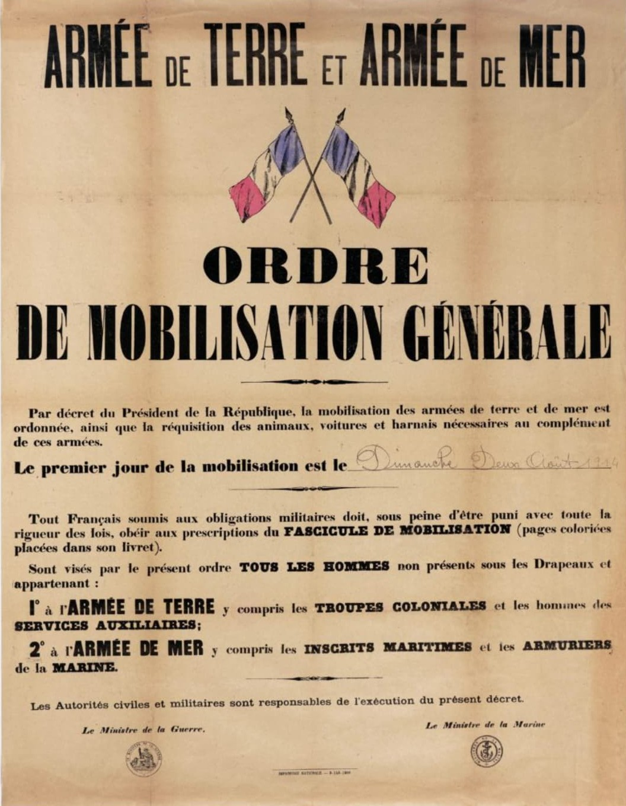

L’Ordre de Mobilisation est le document officiel convoquant un citoyen français à rejoindre son unité en cas de mobilisation générale. Il précise le lieu, la date, l’unité d’affectation et les obligations immédiates du mobilisé.
L’ordre de mobilisation oblige le citoyen à se présenter immédiatement à son unité. Il marque le passage du civil au statut de militaire mobilisé, et constitue la première étape administrative avant la remise du livret individuel.
Le document rappelle que le mobilisé doit : se présenter à l’heure indiquée, suivre le trajet imposé, apporter ses effets personnels, et respecter les consignes militaires dès son arrivée.
En août 1939, la France décrète la mobilisation générale. Des millions d’ordres de mobilisation sont envoyés à travers le pays, convoquant les hommes dans les dépôts, casernes et centres de regroupement. Ce document symbolise l’entrée officielle dans la guerre.
Ce document est essentiel pour comprendre la mobilisation française, l’organisation militaire et le parcours administratif des soldats en 1939‑1940.